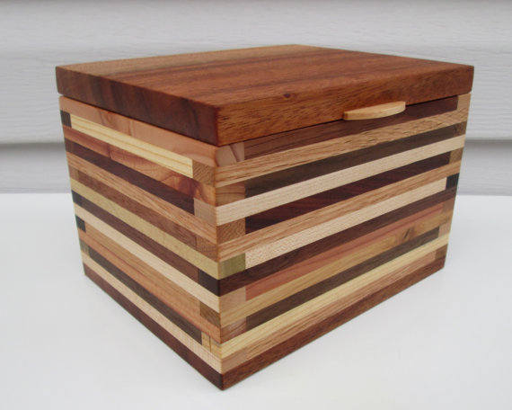

If you're here, it means you know that Mom's turning 70 this January 2!
We'd like to celebrate it by getting 70 people to each write her a note to on her birthday. A note on a recipe card. We’re going to take all the recipe cards, put them together in a hand crafted recipe box, wrap them with a beautiful bow and card, and give them to her on her birthday.

Who should write the notes? Anyone! It doesn't have to be just family and friends. It should be anyone that has either meant something to her, or she's meant something to them. A kid she taught in school. A friend she knew in high school, a childhood friend - Anyone! So definitely pass the idea on to whoever you think would like to help us celebrate her in this way.
On the card, you can put whatever you want - be it a story about how she's helped you out at some time in your life, a fond memory you have of her, a picture you know she'd love to see, or how much you care for her - anything at all that you think she might like to read or remember on her birthday.
So how does this work?
- Use a recipe card or picture that is no bigger than 4x6 inches in size. This is important to make sure they all fit in the recipe box.
- Use more than one card if you want... Think it'd take 10 to tell your story? Then use 10. If we need to get a bigger box, we'll get a bigger box!
- Tell others about it and get them to write her a note too ;-) Forward them this note, and get them to join the Facebook group at this link, so we can talk about it some more: http://INSERT_FACEBOOK_LINK_HERE
- Give the card to any of the following by Dec 28th at the latest. - me, Brock, Katie, April, Julie, Christine, etc.
- Don't let her know! It'd be great if we can do this without her finding out!
It's ok if you can't find a recipe card... Just send us the note you'd like included in the recipe box and we'll print it out nicely and include it as well.
Thanks!
Tony, Brad, Brock, April and Katie